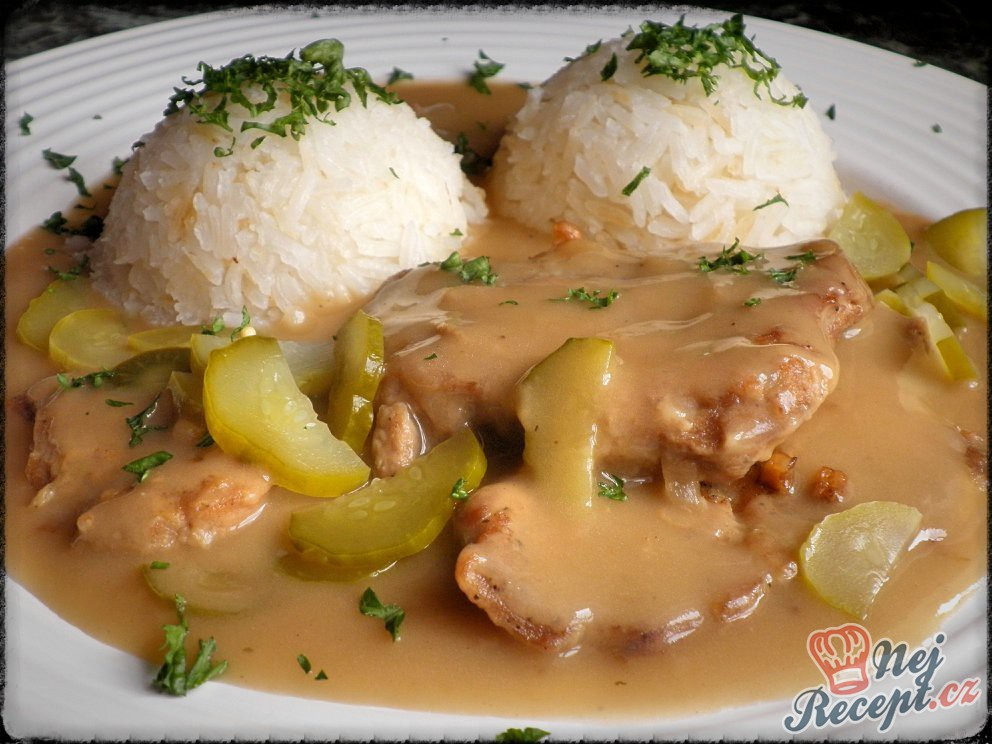

Jednoduchý a šťavnatý pokrm z vepřové kýty, dochucený cibulkou a kořením, ideální s kaší nebo rýží.
Maso nakrájíme na plátky, osolíme, opepříme a posypeme mletou paprikou.
Na pánvi rozehřejeme olej a maso z obou stran orestujeme. Jakmile se zatáhne, vyjmeme ho a dáme stranou v teple.
Cibuli nakrájíme na půlkolečka a na výpeku ji osmahneme dozlatova.
Maso vrátíme zpět k cibuli, přidáme nové koření a podlijeme vývarem. Dusíme přikryté cca 45 minut.
Mouku rozmícháme ve troše vody a přilijeme k masu. Vaříme dalších 20 minut, aby se mouka provařila.
Na závěr dochutíme solí a pepřem. Podáváme s bramborovou kaší, rýží nebo houskovým knedlíkem.